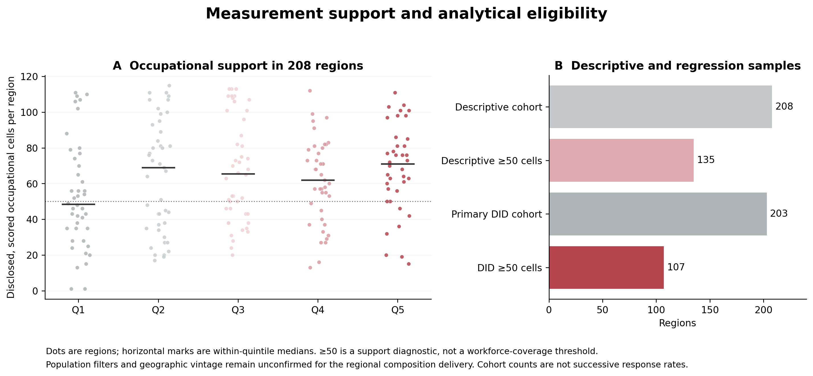
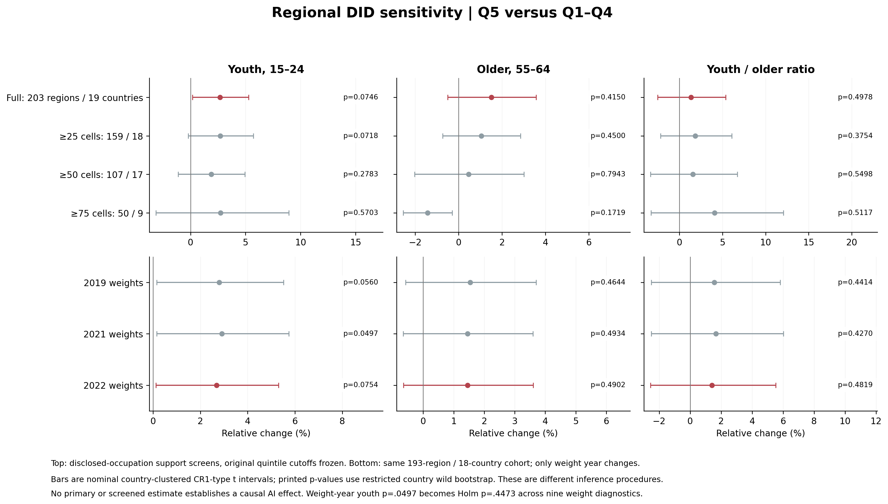

AI, labour and social policy · European regions · Working paper
AI exposure and employment adjustment across European regions
Youngsam Chun · KT Responsible AI Center and UNIST
Working paper draft Version 26 November 2026 · Free official sources · THAIE exposure scores · Exploratory, not causal
Main finding. Transferred AI exposure is concentrated in productive activities, but the current regional panel does not establish robust causal youth displacement. Industry and national signals depend on sample, weighting, time window and measurement. Source and estimand distinctions are part of the evidence.
This study examines whether employment adjustment differs across European regions and age groups with different task-based AI exposure. We link a frozen 2025 time-horizon AI exposure measure (THAIE) to disclosed 2022 occupational composition and keep annual regional, national industry and higher-frequency country panels separate. The descriptive regional cohort contains 208 NUTS-2 regions in EU27; the primary annual DID identifies within-country exposure contrasts in 203 regions across 19 countries. Youth employment has an estimated relative change of +2.69% in Q5 regions versus Q1–Q4, with country wild-bootstrap p = .0746 and primary-family Holm p = .2238. In a separate 511-cell national country–industry cross-section, THAIE is positively associated with real value added per worker, but this is exploratory and does not establish an adoption effect. An ICT-versus-finance age-ratio contrast is negative under equal-region weighting and loses significance under equal-country weighting. Norwegian reference-window diagnostics further show that endpoint declines and pooled DID need not estimate the same quantity. The evidence motivates monitoring labour-market entry while providing no robust causal estimate of AI displacement. Actual adoption, hiring flows, incomplete occupational support and changing statistical definitions remain central identification constraints.
Keywords Artificial intelligence, occupational exposure, youth employment, regional labour markets, NUTS-2, Europe. JEL J21, J23, O33, R11.
Research website, evidence version 26 November 2026. Estimates are retrospective and exploratory. The separate manuscript has not been edited.
1 · Introduction
Research questions and contribution
Generative AI may raise productivity, change task allocation and alter entry into professional careers. These mechanisms need not generate the same aggregate employment response. A high-exposure region can retain employment even if a particular industry reduces junior recruitment, and employment stocks can remain stable while hires and separations slow. The empirical question is therefore which unit, margin and comparison identifies an adjustment.
We ask three questions. First, is transferred THAIE concentrated in more productive activities? Second, does youth employment change differently in highly exposed NUTS-2 regions after 2022? Third, are age-composition changes shared by two highly exposed industries, information and communication and finance, or specific to one of them? National Norwegian and German panels provide supplementary checks on age contrasts and sensitivity to reference periods.
We provide a reproducible, retrospective assessment of age-specific employment differences across European regions using a fixed transferred exposure measure and explicitly separated source populations. Relative to regional exposure maps and national early-career studies, the contribution is to examine whether post-2022 patterns survive changes in occupational support, country weighting and comparison windows. The analysis documents sensitivity to the estimand; it does not identify an adoption effect or validate incremental THAIE information beyond content-only exposure. It is not a single pooled European worker panel.
2 · Literature review
Related literature and identification challenges
2.1 Productivity and complementarity
Workplace evidence shows that assistance can improve output, including for less-experienced workers. The staged deployment studied by Brynjolfsson, Li and Raymond (2025) is conceptually distinct from a cross-sectional exposure–productivity association. Humlum and Vestergaard’s March 2026 revision emphasises task reorganisation and mobility alongside small mean earnings and hours effects in Denmark. These studies motivate separate measures of technical exposure, actual adoption and realised output.
2.2 Entry, stocks and flows
Falck, Fuest and Guo (2026) and Palladino et al. (2026) highlight age-specific hiring and employment margins. Reduced hiring can precede a detectable contraction in employment stocks. The US early-career pattern in Brynjolfsson, Chandar and Chen (2026) is a comparative observational benchmark, with different ages and payroll coverage. Our industry and Norwegian stock outcomes cannot by themselves test a hiring mechanism.
2.3 Counterevidence and macroeconomic confounding
Facius and Iacono (2026) report no robust Norwegian displacement and date-placebo sensitivity. Hernæs and Kostøl (2026) obtain an imprecise zero for complete youth exposure quintiles. ECB and Commission assessments also emphasise the labour-demand cycle. Together these studies make pre-period choice, full occupational support, country weights and actual adoption essential rather than optional controls.
2.4 Learning as a testable mechanism
Asriyan, Reichardt and Shelegia (2026) model how automating junior tasks can alter incentives to enter experience-intensive careers. This conditional theoretical mechanism motivates future hiring, training and career-progression data. It is not established by an age-ratio decline in our data.
Recent employment evidence, 2025–2026
Hiring flows, employment stocks and workplace productivity need separate comparisons. Exposure indices and age definitions also differ.
Broad displacement is not evident, but German youth employment and European entry hiring show warning signals.
Germany uses full-time ages 20–24 versus 25–64, continuous exposure and a long pre-period. Our Norwegian age groups, score, fixed cells and November reference differ.
AI assistance raises customer-support productivity by 15% on average, with larger gains for novices.
One workplace setting, not an aggregate employment effect or a replication of our cross-sectional productivity association.
The March 2026 Danish revision is titled Still Waters, Rapid Currents, previously Large Language Models, Small Labor Market Effects. Working papers and policy reports remain distinct from peer-reviewed evidence.
Regional context and questions outside the current design
Buarque et al. (2026) distinguish the regional geography of AI innovation, exposure and use. Their work motivates separating technical exposure from adoption capacity; our models do not observe the latter. Cnossen and Koster (2024) provide an earlier comparison of the geography of AI, software and robot exposure.
Recent observational research emphasises early-career adjustment, while causal identification remains contested. Nurski and Ruer (2024) review workplace evidence suggesting that assistance may particularly benefit less-experienced workers. This literature review is not a new causal estimate from their own European employment data. Entry substitution and incumbent learning remain distinct hypotheses.
Gender segregation, migrant disparities, political responses and long-run regional innovation are relevant future questions. The current panels do not identify these mechanisms, and they are not claimed as contributions tested by this study. Unsupported tool-use percentages and undated national adoption comparisons have been removed.
Additional current evidence verified on 26 November 2026
Recent youth labour-market weakness is also compatible with ordinary cyclical adjustment; aggregate productivity and employment must be distinguished.
A competing macro explanation, not a causal microstudy or a coefficient benchmark.
Download the literature additions. Working papers, institutional assessments and peer-reviewed papers are identified separately; none supplies a directly comparable common causal coefficient.
3 · Methodology
Data, measurement and empirical strategy
3.1 Data architecture and analytical samples
Additional collected census, national labour-agency and regional-account files are indexed by country in the collection inventory. Reference years and native classifications vary. Registered jobseekers are not ILO unemployment, workplace employment is not resident employment, and a 2021 census is not a 2022 observation. These sources do not establish a complete 2022 NUTS-3×ISCO3 European panel and are not pooled into the primary estimates.
Occupational-support diagnostics. Across the 208 descriptive regions, the number of disclosed scored occupation cells ranges from 1 to 115, with median 63. The ≥50-cell sensitivity retains 135 regions using the original cutoffs. Population scope and geography vintage are marked unconfirmed in the current regional linkage audit. These diagnostics are not response rates or total-workforce coverage estimates. Download region-level support and confirmation fields.
We preserve a source-specific collection archive and construct separate analytical datasets. Collection does not imply inclusion in a model. The dataset and variable register records provider, period, geography, population, units, analytical role and limitations. The country collection inventory is a dated collection snapshot, not proof of complete comparable NUTS-3 occupation data. Subsequent Norwegian and German additions are documented in the register. No country panels are silently pooled.
Module
Source and variables
Analytical sample
Role and boundary
Regional exposure
Eurostat EN40892, 2022 annual occupation counts, ISCO3 and reliability flags
208 EU27 NUTS-2 regions in the descriptive outcome cohort; 135-region ≥50-cell support sensitivity
Conditional disclosed-occupation exposure. The delivery contains 38,348 rows across 31 countries and 283 regional codes, not 38,348 independent observations.
Regional outcomes
lfst_r_lfe2emp, employed persons by age and sex, thousand persons
Primary 203 regions × 6 years, 2020–2025, in 19 identifying countries; long sensitivity 193 regions, 2018–2025
Age-specific employment and youth/older ratio. The 208-region descriptive cohort is different from the identifying regression sample.
Productivity
Eurostat national accounts real GVA and domestic employment; national occupation composition
Separate populations, ages and frequencies. France is a probabilistic sample-composition extension, not an observed ISCO employment census.
3.2 THAIE and occupational linkage
The frozen input is our GPT-5 2025 THAIE benchmark with H50 = 203.012577 minutes. It combines task-content exposure and predicted task duration in the upstream task calculation; it is not an observed 2022 adoption rate or an estimated causal treatment. The European step transfers 922 matched O*NET occupation scores into 125 ISCO-08 three-digit groups using the official O*NET-SOC2019–ESCO/ISCO correspondence. Each O*NET occupation contributes once within a target ISCO3 group, even if linked to several ESCO entries. Unmatched occupations are not manually assigned. The frozen score table and linking audit are downloadable.
To = Σj∈J(o)Tj / |J(o)| Tr,2022 = Σo∈D(r)Nro,2022To / Σo∈D(r)Nro,2022
J(o) is the set of distinct matched O*NET occupations and D(r) the disclosed, scored standard occupations in a region. The denominator is disclosed mapped employment, not independently verified total regional employment. A 100% mapped share of disclosed mass is therefore not 100% workforce coverage. The source population filters and geographic vintage remain unconfirmed in the regional delivery. This limits substantive interpretation of ranks.
Regional quintiles rank regional scores across the fixed European reference set, not separately within each country. They remain fixed across years and age/sex selections. Occupational quintiles rank occupations and are a different unit. The annual Eurostat explorers first average ISCO3 scores to ISCO1 or ISCO2 without within-group employment weights, rank those broad groups, sum employment within quintiles and index the sums. In EU27, the detailed explorer retains 40 ISCO2 groups over 2020–2025; broad-age ISCO1 samples retain 9–10 groups. They include all employed persons and are not the report’s 118-occupation full-time 20–64 education-excluded sample.
The Norwegian regional proxy instead averages three-digit scores within two-digit groups using fixed national November 2022 employment. Its occupational quintiles use fixed 2022 national employment-weighted cutoffs. The German snapshot extension uses equal counts of mapped ISCO3 groups. Different quintile definitions are explicitly labelled and never treated as interchangeable.
Measurement validity and analytical eligibility
Question
Existing verification
What remains unresolved
Does the task formula reproduce the stored score?
The prior independent audit reproduced 19,265 task contributions with maximum absolute error 2.22×10⁻¹⁶ and verified horizon calibration and time units.
Numerical agreement is not external validation against European task performance or actual AI use.
Does occupational transfer determine the result?
An alternative equal-ISCO4 transfer gives regional score Spearmanρ=.99545 across 241 scored regions; 28 quintile labels change but no Q5 membership changes.
This checks one transfer convention, not all plausible crosswalks or population transportability. The241-region score universe is not the 208-region outcome cohort.
How much occupational information supports each region?
In the 208-region descriptive cohort, disclosed scored cells range 1–115, median 63. The ≥50-cell descriptive sensitivity contains 135 regions.
Disclosed employment is not certified total-workforce coverage; a region supported by one occupation is particularly fragile.
Does a support screen preserve regression evidence?
The ≥50-cell DID cohort has 107 regions in 17 identifying countries; youth +1.876%, wild p=.2783.
Screening changes the population. It does not repair unconfirmed source filters or historical boundaries.
Are alternative weights informative on the same sample?
On the same 193 regions in 18 countries, youth wild p ranges .0497–.0754 across 2019/2021/2022 weight years.
The minimum becomes Holm p=.4473 across nine retrospective weight diagnostics; selecting 2021 weights by significance would be inappropriate.

Measurement Figure 1. Occupational support and sample eligibility. Dots are regions and horizontal marks are medians. Cohort counts are not response rates; the threshold does not certify population coverage.
Employment is a count, not an employment rate. Age ratios compare group counts and do not identify the same workers over time, hiring or retirement flows. Core regional youth and older groups are 15–24 and 55–64; industry comparisons use 15–24 and 25–64. These adults are not labelled elderly. Each source’s actual age bands are retained.
Counts are summed before indexing. Annual sources use their published 2022 value; observed monthly sources use November 2022; quarterly Norwegian reference-month sources use their actual November observation; UK annual windows end in June; German snapshots use June 2022. These are not equivalent baselines. Graphs starting 2022 do not restrict regression pre-periods. Percent effects equal 100×[exp(β)−1]; log points equal 100β and are not percentage points.
Where directly published youth cells are missing, some industry modules calculate 15–24 as published 15–64 minus published 25–64. This is an accounting-derived centre, not an official observation or statistical imputation. Derived cells, observed-only sensitivity and feasible rounding bounds are reported separately. No explicitly c/x-flagged cells were reconstructed in the audited age-difference sample. Other unavailable-cell reasons remain unresolved, so accounting differences are a separate sensitivity, not recovered observations. No new statistical employment imputation is introduced in the core analyses; exploratory historical imputations or probabilistic transfers, where collected, are not silently promoted to observed outcomes.
The primary regional DID uses 2020–2022 as pre and 2023–2025 as post, region and country-by-year effects, and fixed 2022 age-specific employment weights. The log youth/older ratio uses harmonic paired baseline weights. Its coefficient is numerically equivalent to an appropriately paired stacked-age DDD; separately weighted young and older coefficients must not simply be subtracted. Annual 2022 contains post-launch weeks and the pre-period includes COVID; this is not a November 2022 discontinuity design.
Country-clustered CR1 intervals and restricted country wild-bootstrap p-values are reported separately. Primary regional inference uses 9,999 draws and 19 identifying countries; effective country information is approximately 4.8–4.9. Long-window diagnostics use 193 regions in 18 countries and do not keep the same cohort. Industry contrasts report equal-region and equal-country weighting and country leave-one-out results. Productivity uses fixed 2022 employment weights, country and industry effects and two-way clustered uncertainty.
Norwegian dynamics use the same 205 cells and fixed four-group harmonic weights, county–occupation and county–measurement-quarter effects, and November 2022 as reference. Occupation-level clustering, pointwise intervals and multiple-quarter corrections are distinguished. The 2025 reporting regime is flagged. German snapshot age contrasts use the conditional profile likelihood of Poisson counts, with occupation×time, age×time and occupation×age effects; these three snapshots cannot establish long-run parallel trends.
All families are retrospective. Regional primary Holm correction covers three outcomes; the broader nine-specification family is separate. Productivity’s 320-row inventory includes repeated baselines and is not a preregistered or exhaustive search universe. ICT module corrections do not cover every historical specification. We report both BH and Holm where available, including conflicting conclusions. Failure to reject a pretrend or placebo does not verify parallel trends; an insignificant effect does not prove no effect.
3.5 Collection, cleaning and reproducibility
Raw deliveries retain filenames, units, flags and extraction metadata. We check archive integrity, duplicate keys, code hierarchy, numeric parsing, age identities, published totals and input hashes. Totals and nested occupation levels are not summed together; confidential x remains unavailable and u remains a reliability warning. Region codes matching a code list do not establish historically harmonised boundaries. The ≥50-occupation sensitivity measures support, not representativeness. Accounting derivation, probabilistic French linkage, official modeled occupations, ARDECO estimates/forecasts and observed counts remain distinct statuses.
ARDECO estimates and forecasts are retained as labelled contextual or alternative-source benchmarks, which the study permits. The current headline productivity estimate uses Eurostat national accounts, and primary youth employment uses observed LFS cells. German BA all-employee snapshots, French sample composition, UK payroll and Swedish county employment are supplementary, not substitutions for the core population.
On 26 November 2026 a new no-charge Eurostat request was emailed for EU27 quarterly ISCO3, full-time employees 20–64 not in formal education,2021Q1–2024Q4. Eurostat sent an automatic receipt acknowledgement at 15:33 KST on 26 November; no substantive answer or data attachment was present in the current mailbox check. It has not produced a dataset. EconPol 61 itself notes two-digit-only occupations for Malta, Slovenia and Bulgaria. The proposed trailing four-quarter average and 2022Q3=100 analysis is pending verified delivery; it is not part of any present result. Four-quarter smoothing requires four consecutive observed quarters and cannot be reconstructed from annual data.
Scope of inference. Clustered intervals and bootstrap tests condition on fixed aggregate inputs and linked exposure scores. They do not jointly propagate LFS design covariance, exposure-score estimation error, uncertain occupational correspondence or French probabilistic-linkage error. In the shared regional WLS engine the cluster correction uses G/(G−1); it is not a claim of a full finite-sample adjustment counting all absorbed fixed-effect parameters. The occupation-support and geography checks remain unresolved measurement limits.
3.6 Source-specific availability
Requested comparisons and what the acquired free sources actually support
Requested feature
Supported evidence
Boundary
Monthly, from 2020
Swedish counties, actual employment by age and sex
All occupations, grouped by regional exposure; not software employment
European occupation exposure quintiles
Annual Eurostat national occupation tables
ISCO1 broad ages or ISCO2 ages 15–64; no monthly occupational cells
Software developers
UK SOC2020 2134; Sweden SSYK2512
Annual, exact occupation series lack the requested age-by-month cross-tabulation
Software-related age profiles
Sweden native SSYK251, annual by county, age and sex
Broader than software developers, not interchangeable with SSYK2512
Additional regional software data
Finland ISCO251, annual regional counts by sex
Broader software/application group; no detailed age split
22–25, 26–30, 31–34, 35–40, 41–49, 50+
Actual source bands are displayed in the controls
Exact requested cut-offs are not acquired; no single-age allocation or relabelling
Occupation fixed, five exposure strata
Age paths within a native occupation
A single fixed-score occupation cannot be divided into five exposure quintiles
UK in regional Eurostat panels
New ONS extract displayed separately through June 2026
Not merged with incompatible EU age panels; classification and area changes are flagged
Show the requested age definitions without substituting them
22–25 · 26–30 · 31–34 · 35–40 · 41–49 · 50+
All six exact requested definitions are unavailable jointly with monthly occupation and regional sex counts in the acquired sources. The controls below use observed bands only. The monthly Swedish young group is 20–24; the annual Swedish young group is 16–24. They are not the same population.
4 · Results
Results and robustness
4.1 Exposure and productivity are positively associated
In 511 EU27 country–industry cells, a 0.01 higher THAIE is associated with 6.60% higher real GVA per worker, conditional on country and industry effects and weighted by 2022 employment. The nominal two-way clustered 95% interval is 3.15–10.15%, p=.000653, and partial weighted R²=.0538. In the expanded retrospective 320-coefficient inventory, BH q=.0427 but Holm p=.2076. The incremental THAIE coefficient is not significant when conditioning on content-only exposure. This is the clearest cross-sectional association, not evidence that AI caused productivity growth or that time-horizon information has validated incremental predictive power.
4.2 Regional DID does not establish youth displacement
Table 1. Q5 versus Q1–Q4, primary annual regional DID,203 regions in 19 identifying countries
Outcome
Relative change
Nominal CR1 95% CI
Country wild p
Holm p,3 primary outcomes
Youth employment,15–24
+2.69%
+0.17 to +5.27%
.0746
.2238
Older employment,55–64
+1.51%
−0.51 to +3.57%
.4150
.8300
Youth/older ratio
+1.34%
−2.52 to +5.37%
.4978
.8300
None passes the 5% bootstrap threshold used in this retrospective module. The nominal youth CR1 interval and bootstrap p use different inferential procedures and need not agree. This is not evidence of zero effect. Country information concentration and unverified occupational support limit precision and interpretation. Joint lead-test p-values are .3694, .3542 and .7050, respectively, on the separate 193-region long sample; non-rejection does not establish parallel trends.
Support sensitivity. Requiring at least 50 disclosed scored occupation cells leaves a regression sample of 107 regions in 17 countries (642 region-years). With the original quintile cutoffs frozen, youth employment changes by +1.876% (wild p=.2783), older employment by +0.460% (p=.7943), and the ratio by +1.556% (p=.5498). The 135-region descriptive support explorer is a different cohort. Neither threshold validates full-workforce coverage or resolves unconfirmed source filters and boundary vintage.
4.3 The ICT age-composition contrast is industry-specific and weight-sensitive
Table2. Industry age-ratio contrasts,2022–2025. Every interval below is exp-transformed from a pointwise country CR1-type t interval. Bootstrap p-values are a separate inference procedure.
Contrast / weighting
Regions / countries
Relative change
Nominal 95% CI
Wild p
Four-outcome Holm p
ICT within-industry ratio
202 / 33
-14.76%
[-23.76, -4.69]%
0.0093
0.0279
Finance within-industry ratio
202 / 33
+9.71%
[-3.68, +24.97]%
0.1724
0.3448
ICT minus finance / equal regions
202 / 33
-22.30%
[-35.17, -6.88]%
0.0141
Not in this family
ICT minus finance / rest-of-economy DDD
202 / 33
-22.65%
[-35.60, -7.09]%
0.0141
Not in this family
ICT minus finance / equal countries
33 / 33
-8.82%
[-28.84, +16.83]%
0.4520
Not in this family
Uncertainty in accounting-derived cells. These confidence intervals and bootstrap p-values condition on the observed or accounting-derived centre values. They do not propagate rounding uncertainty in derived youth counts or the full LFS survey-error covariance. Conservative rounding bounds for the full 202-region ICT-minus-finance DID and DDD are unbounded. Even among the 164 regions with finite bounds, the DID interval is −71.929 to +16.242 log points and includes zero. Consequently, the negative centre contrast is not sign-identified under these bounds.
Figure 1. Industry age-ratio comparisons. Intervals are pointwise CR1 intervals, not simultaneous bands; interpretation uses the associated country wild-bootstrap tests.
The observed-only common sample contains 22 regions in 9 countries; its ICT-minus-finance equal-region p is .03125 and equal-country p is .21875. The following multiplicity values use the same 202-region extended sample as Table 2: ICT within-industry change p=.0093, four-test Holm p=.0279; ICT rest-of-economy DDD p=.0034, Holm p=.0136; finance Holm p=.3448 for either specification. These four-test corrections exclude the later ICT-minus-finance contrasts and do not cover all historical searches. Industry cycles, recruitment and age composition remain competing explanations.
4.4 Supplementary evidence and limits of generalisation
Norwegian fixed-reference dynamics show youth-relative weakening, but the November 2024 male quarterly DID wild p=.0133 becomes Holm p=.1995 across 15 quarters. Endpoint and pooled-average specifications can have opposite signs on the same 205 cells. The German three-snapshot age DDD is approximately−2.97% per SD with p=.3545 on a selected 19.22%-coverage cohort. Neither is a robust Europe-wide causal effect. French probabilistic composition and sex-specific explorers remain descriptive. A sex-specific estimate is not a formal between-sex effect test.
Evidence assessment. The findings support reporting a productive-activity association, limited evidence of regional differential adjustment, and a heterogeneous industry age-composition pattern. They do not support selecting a statistically significant specification as proof of AI displacement. Supplementary diagnostics and all existing explorers are retained below.
01 · Europe-wide annual overview · 208 NUTS-2 regions
These ranks measure the disclosed and mapped part of regional employment. The support screen is a sensitivity check, not a workforce-coverage threshold; original quintile cutoffs remain fixed. Inspect every region’s occupational support.
The full descriptive cohort has 208 NUTS-2 regions. The 135-region support sensitivity uses the same ages and frozen quintile definitions. Country and individual-region views are subsets. Incomplete public observations remain unavailable; broad age totals overlap.
02 · Annual European occupational evidence · Age and sex
03 · Quarterly evidence · Available national sources
04 · Monthly regional evidence · United Kingdom
05 · Occupational categories · Annual country sources
Europe-wide regional coverage first. The default requests monthly European NUTS-2 coverage and states explicitly where observations remain unavailable. Switch to the observed annual European panel or the newly collected UK monthly payroll series. Software occupations remain separate source selections; payroll totals are not software jobs.
06 · Supplementary monthly case · Sweden
Monthly regional exposure comparisons do not identify the exposure of the individual workers being counted. No causal AI interpretation is attached to the November 2022 marker.
07 · Supplementary annual case · Sweden
The occupational sample is restricted to deterministic SSYK3-to-ISCO3 links. The broad native group 251 is ambiguous at this level and remains outside these quintile totals, while its native age profile is shown separately below.
08 · Statistical evidence and robustness
The strongest retained association concerns productivity, not a demonstrated AI displacement effect. Across 511 country-industry observations in EU27, a 0.01 higher THAIE is associated with 6.60% higher real value added per worker after country and industry fixed effects, using 2022 employment weights. Its nominal two-way clustered 95% interval is 3.15% to 10.15%, p=0.00065, partial weighted R²=0.054.
Comparison
Estimate
Inference
Interpretation
Exposure and productivity
+6.60% per 0.01 THAIE
Two-way p=0.00065
Cross-sectional association, not an AI productivity gain
Older employment in high sectors, short window
+5.41%
Country wild p=0.0003
Expansion follows a pre-existing trajectory
Youth/older ratio, high sectors
−6.27% short; −1.63% long
Wild p=0.0055; 0.2432
Pre-period sensitive; no repaired short-window two-way p
In the expanded retrospective 320-row coefficient inventory, the productivity association has BH q=0.0427 but Holm p=0.2076. Rows include repeated baselines and dependent sensitivities, not 320 independent preregistered hypotheses. Conditional on content-only exposure E, the incremental THAIE coefficient is not significant. Full correction families, null results and limits remain in the downloadable report.
Existing statistical review, 24 November 2026. Annual country-industry analysis, separate from the newly added monthly regional explorer.Download publication tables and figures
The other high-industry rows above belong to the dated 24 November country–industry review and are not estimates from the current regional DID. Legacy PDFs retain their original samples and inference families; current Results and this review identify subsequent corrections.
Regional identification, pre-trends and inference audit
Detailed regional DID, identification and support audit
A new retrospective analysis compares regional THAIE Q5 with Q1–Q4 using three annual pre-period observations (2020–2022) and three post-period observations (2023–2025). The balanced sample contains 203 NUTS-2 regions in 19 identifying countries. Region and country-by-year fixed effects are included, with fixed 2022 employment weights. The annual post-2023 indicator approximates the hypothesised November 2022 event; it cannot locate an exact monthly discontinuity.
Outcome
Relative DID change
Country wild-bootstrap p
Holm p, three primary outcomes
Youth employment, ages 15–24
+2.69%
0.0746
0.2238
Older employment, ages 55–64
+1.51%
0.4150
0.8300
Youth-to-older employment ratio
+1.34%
0.4978
0.8300
None of the three primary outcomes is significant at 5% under the 9,999-draw restricted country wild bootstrap. The age-ratio estimate is algebraically equivalent to a stacked age DDD with the same paired weights and saturated age-specific fixed effects; this equivalence was checked numerically.
Identification diagnostics use the stricter 2018–2025 balanced sample of 193 regions in 18 countries. Joint pretrend p-values are 0.3694 for youth, 0.3542 for older workers and 0.7050 for their ratio. A pre-AI placebo split at 2020 yields p-values of 0.6376, 0.6409 and 0.6360. That placebo overlaps COVID and is only a confounding diagnostic. Failure to reject these tests does not verify parallel trends or rule out economically meaningful effects.
The unadjusted long-window youth estimate is +2.75% (p = 0.0476), but its Holm p across the nine effect specifications is 0.4284. With a group-specific linear trend, the youth estimate is +3.55% (p = 0.2065). Thus a claim of regional youth displacement is not robustly supported here. These regional estimands differ from the industry comparisons in findings 2 and 3.
Exposure is not randomly assigned and actual AI adoption is not observed. Public occupational coverage and historical regional-boundary consistency remain unresolved. Concurrent regional industrial shocks, migration and the limited number of informative country clusters remain identification concerns. The evidence supports a statement about conditional employment differences, not a demonstrated causal AI effect or proof of no effect. A credible monthly causal design still requires comparable adoption information and sufficiently long pre- and post-period observations.
Occupational-support and inference audit
Regional scores condition on disclosed, mapped occupations. Some regions have only one contributing occupation, including DEB2 in Q5. A mapping fraction of 100% within disclosed cells is not full workforce coverage. The descriptive 208-region cohort is retained with provisional ranks; its support-screened sensitivity contains 135 regions and preserves the original quintile cutoffs.
Annual regional DID
Regions
Youth change
Wild-bootstrap p
Youth/older ratio change
Wild-bootstrap p
Unfiltered balanced sample
203
+2.689%
0.0746
+1.345%
0.4978
At least 50 published mapped occupations
107
+1.876%
0.2783
+1.556%
0.5498
The 50-occupation screen diagnoses sparse support; it does not certify employment coverage. Both samples keep frozen 2022 quintile cutoffs. Statistical significance is not stable across weighting years. Country-CR1 t intervals and restricted wild-bootstrap p-values use different approximations: the primary youth t interval excludes zero although its wild p is 0.0746. The latter is used for the stated significance assessment. Joint pretrend rows report joint p-values without attaching a single coefficient or confidence interval.
Norwegian dynamic estimates and the reference-period diagnostic
Under 25 versus ages 55–64, by sex. The fixed cohort contains 205 county–occupation cells in eight counties. Main dynamic models use county–occupation and county–measurement-quarter effects with fixed four-group 2022 harmonic weights. Quarterly observations are measured in February, May, August and November; the reference is the observed November 2022 value. The post-2025 reporting regime is marked separately. Exposure is a two-digit occupational proxy built from fixed national three-digit composition, not observed AI adoption.
Pointwise intervals do not adjust for the full set of quarterly tests. Multiple-testing adjustments weaken the evidence. November 2025 youth DID is −15.34% for men and −9.05% for women; DDD is −13.55% and −7.57%. The reporting change prevents a clean attribution of later changes to AI. For the November 2024 male youth DID, p=.0133 becomes .1995 across 15 post quarters and 1.000 across the 90 post-quarter tests of that model. The male age DDD is .0158, .2370 and 1.000 under those respective families. Families remain retrospective and do not represent all historical searches.
The matched-reference graph and dynamic regressions use different estimands. Percent effects are 100 × (exp(coefficient) − 1), not percentage-point effects. Sex-specific estimates alone do not test whether effects differ by sex.
Germany · THAIE-linked employment gaps and age DDD · observed snapshots
Partial implementation of the EconPol comparison structure, not a reproduction of its full-time 20–24-year-old sample. Three BA national snapshots are available: June 2020, June 2022 and March 2026. The fixed cohort contains 262 KldB4 occupations mapped unambiguously to 85 ISCO3 groups under both official crosswalk editions. It covers 19.22% of German social-insurance employment in June 2022. The exposure measure is our THAIE. This selected subset does not represent all German employment.
Panel A compares Q5 with Q1 by age, relative to June 2022. Panel B estimates continuous-exposure age DDD using the conditional profile likelihood of Poisson employment counts, with occupation-by-time, age-by-time and occupation-by-age effects. Uncertainty clusters by ISCO3. The main contrast is under 25 versus ages 25–64; ages 55–64 provide a supplementary comparison.
March 2026 versus June 2022
Log points per SD
95% CI, log points
Relative change
p
Holm p, four tests
Under 25 versus 25–64
−3.017
−9.461 to +3.427
−2.97%
.3545
1.000
Under 25 versus 55–64
−3.061
−9.276 to +3.155
−3.01%
.3303
1.000
Neither contrast is statistically significant. A positive Q5–Q1 youth gap in Panel A can coexist with a negative age DDD when the adult exposure gap rises more. These are different comparisons, not evidence that youth employment necessarily fell in absolute terms.
The public age bands include workers under 20, part-time employees and apprentices. Age-specific full-time employment excluding apprentices cannot be reconstructed from separate margins. The source has no November 2022 observation for this selection. Missing quarters are not interpolated, and no four-quarter moving average is calculated. One COVID-period pre-observation cannot establish parallel trends; March-versus-June seasonality is unresolved. Additional BA downloads currently return HTTP 429, including the ordinary browser. Full report-style quarterly analysis remains unavailable pending the required joint table.
Measurement and weight robustness · all diagnostic results
The top row changes the disclosed-occupation support screen while preserving the original quintile cutoffs; consequently the sample changes. The bottom row fixes the same 193 regions in 18 countries and changes only the baseline weight year. The displayed confidence intervals condition on fixed aggregates and transferred scores. Printed bootstrap p-values do not incorporate uncertainty in the crosswalk or source survey design.

Same 193-region sample, primary youth outcome
Weight year
Relative change
Nominal 95% CI
Country wild p
Holm p,9 weight diagnostics
2019
+2.80%
[+0.16, +5.51]%
0.0560
0.4480
2021
+2.91%
[+0.15, +5.74]%
0.0497
0.4473
2022
+2.69%
[+0.13, +5.31]%
0.0754
0.5278
All 15 support-test Holm values and all 9 weight-test Holm values are supplied as separate, retrospective diagnostic families. Repeated baselines mean they are dependent tests, not an exhaustive search inventory. Neither family replaces the three-primary-outcome correction used in Table 1. The 2019/2021 weight choices are sensitivities, not a change of the preferred specification.
Interpretation, policy implications and limitations
5.1 Technical exposure, productive activities and realised adoption
The productivity association shows where transferred technical exposure is concentrated. It does not tell us whether adopting AI raised output. Workplace productivity gains and Danish task reorganisation explain why exposure, productivity and employment can move differently. Firm adoption, capital intensity and workforce skill are unobserved confounders in our cross-section. Policies should evaluate complementary training and work redesign rather than classify every exposed activity as a displacement risk.
5.2 Labour-market entry may adjust differently from regional employment
French hiring evidence and EconPol 61 make entry a plausible early adjustment margin. Our ICT contrast is compatible with that interpretation but also with sectoral recruitment cycles, and it loses significance under equal-country weighting. Regional aggregate DID and Norwegian counterevidence caution against generalisation. Asriyan, Reichardt and Shelegia’s learning mechanism motivates future training and career-progression data; our stocks neither observe lost learning nor establish senior-worker complementarity.
5.3 Policy conclusions must survive a change in the target comparison
A region-weighted average, an equal-country average and a selected occupational panel target different populations. Norwegian endpoint and average-window comparisons likewise target different changes. The policy priority is a monitoring system that separates hires, separations, employment, productivity and skill accumulation, with adoption timing and stable classifications. Youth-entry and mentoring programmes can be evaluated as hypotheses, not justified by a claimed causal job-loss total from these estimates.
5.4 Limitations and next evidence
Exposures are retrospective 2025 capability transfers applied to 2022 structure. Occupation mappings, disclosed-cell support, survey sampling and unverified regional boundaries limit transportability. Accounting-derived youth cells add rounding uncertainty; the French transfer is probabilistic; Norwegian 2025 reporting changes and German snapshot seasonality remain unresolved. Employment and national-accounts populations differ. Multiple testing is only partially described by retrospective families. A qualifying EU27 full-time 20–64 education-excluded quarterly table is requested, not acquired. It will be analysed separately if its scope, flags and publication conditions are confirmed.
5.5 Contribution and falsifiable next steps
The contribution is an explicitly bounded assessment of how regional age patterns depend on measurement support, weighting and the comparison window. A new causal AI effect and incremental predictive validity of THAIE are not established. To distinguish AI substitution from industry demand, the next design needs verified full-time/education-excluded occupational counts, adoption timing and hiring/separation flows. A stable negative effect that survives matched-cohort pre-trend diagnostics and alternative country weights would strengthen the displacement interpretation; disappearance after demand/adoption controls would weaken it. Training and senior-worker complementarity require separate outcomes rather than inference from relative age stocks.
6 · Conclusion
Conclusion
The current evidence links transferred AI exposure to productive activities but does not establish a robust causal employment effect across European regions. The ICT age-ratio pattern differs from finance and is sensitive to country weighting; selected national youth signals are sensitive to design and inference. These distinctions are substantive results. Future work should link adoption and hiring flows to comparable occupational panels while preserving source-specific populations, uncertainty and time resolution.
References
References
Anelli, M., Colantone, I., & Stanig, P. (2021). Individual vulnerability to industrial robot adoption increases support for the radical right. Proceedings of the National Academy of Sciences, 118(47). PMC8617521
Brynjolfsson, E., Chandar, B., & Chen, R. (2025). Canaries in the coal mine? Six facts about the recent employment effects of artificial intelligence. Stanford Digital Economy Lab. Link
Brynjolfsson, E., Chandar, B., & Chen, R. (2026). Canaries in the coal mine? Updated evidence through June 2026. Stanford Digital Economy Lab. PDF
Chaloupka, D., & Dias da Silva, A. (2026). Youth employment amidst cooling labour demand. ECB Economic Bulletin, 5/2026. Link
Cnossen, F., & Koster, S. (2024). The geography of new technology: Exposure to AI, software and robots in European regional labour markets. Italian Labour Law e-Journal, 17(2), 1–28. doi:10.6092/issn.1561-8048/20803
D'Alessandro, F., Santarelli, E., & Vivarelli, M. (2026). The interplay between AI and technological relatedness in shaping regional innovation in Europe (IZA Discussion Paper No. 18817). PDF
Guarascio, D., Reljic, J., & Stöllinger, R. (2023). Artificial intelligence and employment: A look into the crystal ball (LEAP Working Paper 11/2023). Luiss.
Guarascio, D., Reljic, J., & Stöllinger, R. (2025). Diverging paths: AI exposure and employment across European regions. Structural Change and Economic Dynamics, 73, 11–24. doi:10.1016/j.strueco.2024.12.010
International Labour Organization. (2026). Gen AI, occupational segregation and gender equality in the world of work (Research brief). Link
International Labour Organization & NASK. (2025). Generative AI and jobs: A refined global index of occupational exposure. ILO.
Kogler, D. F., & Salotti, S. (2026). The geography of artificial intelligence in European regions: Innovation, exposure and use. Regional Studies, 60(1). doi:10.1080/00343404.2026.2681659
Nurski, L., & Ruer, N. (2024). Exposure to generative artificial intelligence in the European labour market (Bruegel Working Paper 06/2024). Link
OECD. (2026). OECD regions and cities at a glance 2026. OECD Publishing. Link
Oxford Economics. (2026). The north–south regional divide in AI adoption (Research briefing). Link
Riccio, F., Staccioli, J., & Virgillito, M. E. (2025). European regional employment and exposure to labour-saving technical change (LEM Working Paper 2025/19). Sant'Anna School of Advanced Studies.
West European Politics. (2024). Perceived automation threat and support for populist and non-populist parties in 15 European countries. doi:10.1080/01402382.2023.2297601
Xiao, J., & Boschma, R. (2023). The emergence of artificial intelligence in European regions: The role of a local ICT base. The Annals of Regional Science, 71. doi:10.1007/s 00168-022-01181-3
Falck; Fuest; Guo (2026-11). AI and the Labor Market Productivity Driver or Job Killer. EconPol Policy Report 61. Primary source
Facius; Iacono (2026). Labour Market Consequences of Generative AI Early Evidence from Norway. CESifo Working Paper 12752. Primary source
Hernæs; Kostøl (2026-06). Has AI Widened Employment Gaps Tracking Early-Career Employment by Occupational Exposure in Norway. IZA Discussion Paper 18767. Primary source
Humlum; Vestergaard (2026-03-13). Still Waters Rapid Currents Early Labor Market Transformation under Generative AI. Revised working paper NBER33777. Primary source
Palladino; Bergeaud; Bertheau; Bunel; Degos (2026-10). Occupational exposure to generative AI firm adoption and labor market dynamics in France. LIFT Working Paper 2026-02 and Banque deFrance note 463. Primary source
Brynjolfsson; Li; Raymond (2025-02). Generative AI at Work. QJE1402 peer-reviewed. Primary source
Asriyan, Reichardt and Shelegia (21 August 2026). Immiserizing Automation; theoretical working paper with US robot evidence. Primary source
European Commission (Autumn 2026). European Economic Forecast; institutional macroeconomic assessment. Primary source
Data sources (Eurostat, ONS, Statistics Sweden, Statistics Finland) are listed in the Appendix.
No individual records are published. Source-level suppressed cells remain suppressed. Code and aggregates are separately versioned; provider revisions and classification changes may alter future updates.
Specialist-agent review and applied corrections. The review checks the current evidence against source tables and calculations; it is not journal acceptance or certification of causal identification. Eurostat has acknowledged receipt of the new free quarterly request, but has not supplied the qualifying data. No pending data are included in current results.